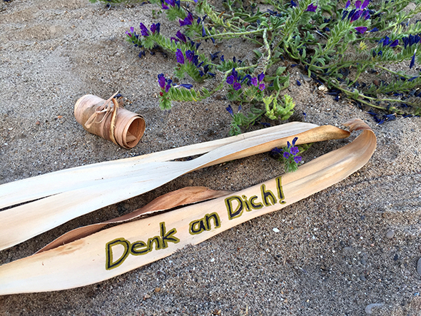

Auf getrocknete Palmenblätter kann man hervorragend eine Nachricht hinterlassen. Eingerollt kann diese dann übergeben werden.
Las hojas secas de las palmeras son excelentes para dejar un mensaje. Enrollado la puedes entregar.
Dried palm leaves can be excellent to leave a message. Curled you can deliver them.